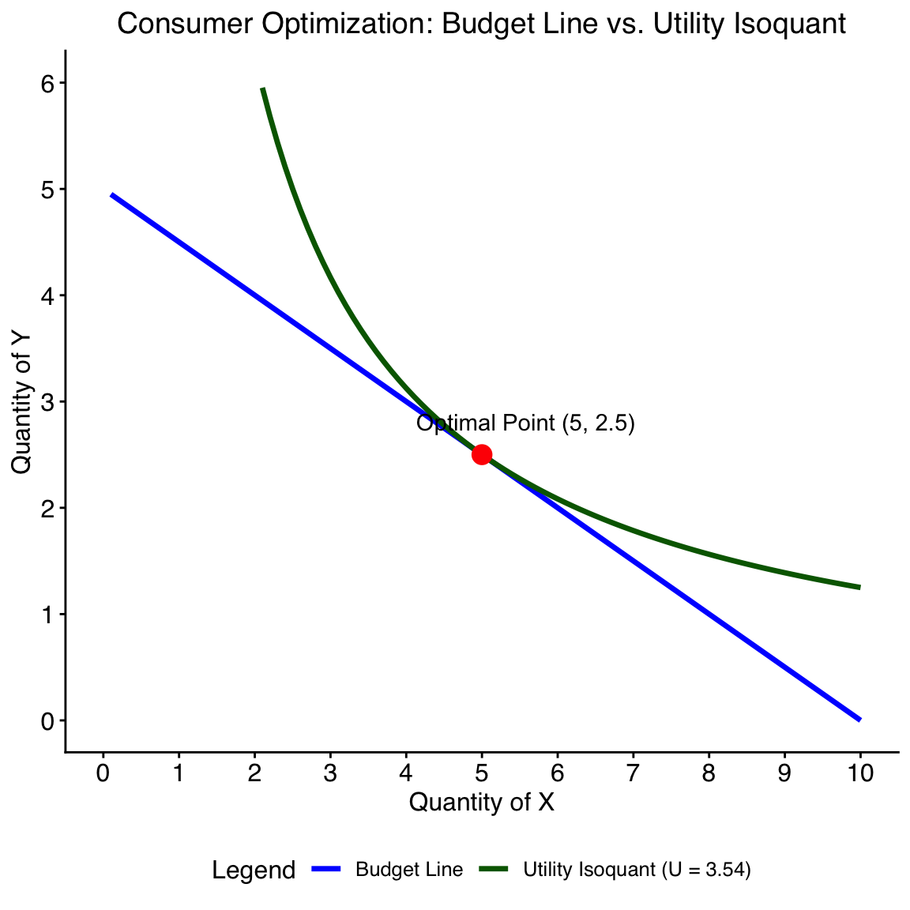
Session 2
Economic analysis Part I: Demand and measurement of demand
Wu Zeng, MD, PHD, Georgetown University
Outline
1
Economics approaches- Study subjects
- Assumptions
- Model building
- Optimization
2
Demand and law of demand
- Definition of demand
- Law of demand and demand curve
- Shift of demand curve
- Consumer surplus (benefit) to consumers
Economics
What is economics
- is the study of human behavior
- is a way of thinking
- provides a systematic way of examining a problem
- provides a rationale for the efficient allocation of scarce resources
Opportunity cost
Definition: Potential benefit that could have been received if the resources had been used in their next-best alternative
What are the most difficult decisions you have made?
What is the most valuable resource that you have?
Circular flow of economy
- Decisions are made by households and firms.
- Households and firms interact in the markets for goods and services (where households are buyers and firms are sellers) and in the markets for the factors of production (where firms are buyers and households are sellers).
- The outer set of arrows shows the flow of dollars, and the inner set of arrows shows the corresponding flow of inputs and outputs.
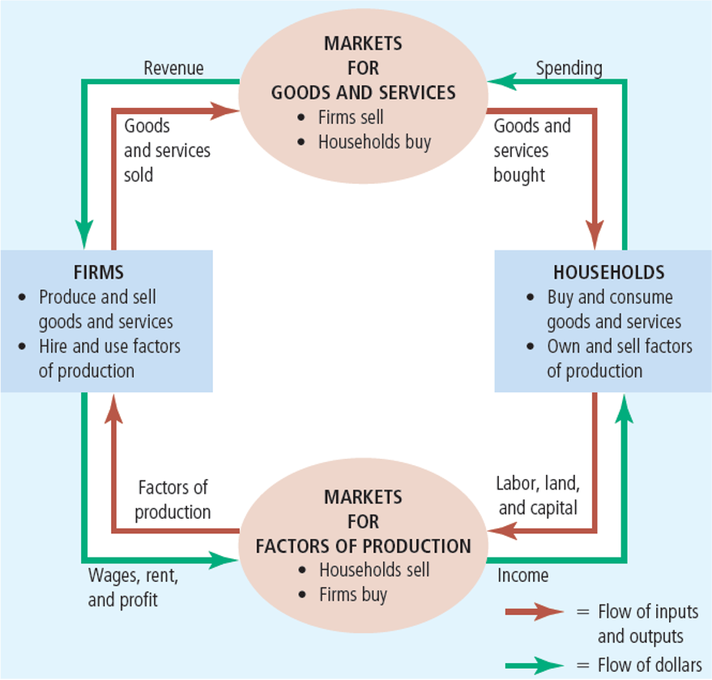
Critical assumptions in economics
- Economic analysis is based on assumptions
- Scarcity, thus we have make choices
- When making choices, we are rational and self-interested
- Maximize utility for consumers
- Maximize profit for producers
- Marginal analysis is the key to optimization for decision making
- Rational Ignorance
- Choosing between alternative actions with incomplete information
The scientific method
- Begins with a premise or postulate
- The scientist observes real-world phenomena events
- A theory is developed
- A hypothesis is formulated
- The hypothesis is tested with data
Economic model
Model building and problem solving
- Goal of economics is to understand, explain, and predict the behavior of decision-makers
- Necessary to simplify that behavior by generalization, constructing a model
- A model is a way of organizing knowledge to make it understandable
- An economic model explains how the economy or part of it, works
- Most microeconomic theory relies heavily on the rationality assumption
- Classifies all decision-makers as optimizers
Example
\[ \text{Number of outpatient visits} = \alpha + \beta * \text{co-payment per visit} \]
Economic Optimization
Optimization is the process of finding the best course of action, given the decision-maker’s goals and objectives.
- Optimal decision-making
- Example: Individual will continue to purchase a service as long as the marginal benefits from consumption exceed marginal costs
- Marginal decision-making
- If MB = MC (equilibrium is reached), no more purchasing/consumption
- However, subsidized medical care tends to create overconsumption.
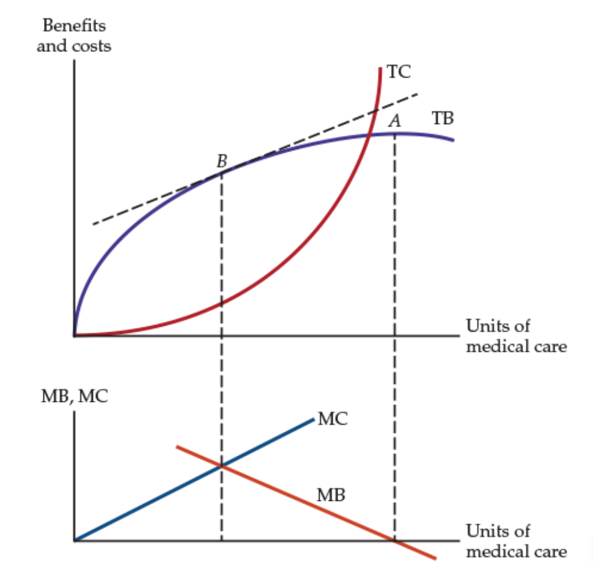
Economic Optimization
Economic optimization is a fundamental resource allocation questions, from the producer’s perspective, the questions are:
What
do we produce?
How
do we produce it?
Who
gets it
Marginal analysis
Definition
The study of the consequences of small changes in a variable or variables.
Marginal utility
The change in total utility derived from a one unit increase in consumption
Marginal product
The change in total products derived from a one unit increase in input
Decision making is mostly based on margin as margin is related to optimization
Margin
Why margin is related to optimization
From consumer perspective
Assuming you are very thirsty, and would like to purchase ice water to quench thirst. One bottom of ice water cost $2. How many bottle do you want to have? or when will you stop buying the ice water?
Optimize utility for given budget constraints, consumer would consume the amount of goods till when marginal utility (Benenfit) equals marginal cost
MB = MC
When will you stop eating when having dinner in a buffet restaurant? In this case, what is the marginal cost?
Marginal thinking
Marginal thinking is the heart of economics
People make decision based on margins
Discussion (3 minutes)
Please dicuss among yourself and come up with a example that the marginal analysis play a role in your decision making process in your real life.
Demands
For any goods and services, we needs to consider both supply (suppliers) and demand (consumers) sides, Let us focus on the demand side first
Demand
Demand
Law of demand and demand curve
- Derivation of demand curve
Shift of demand surve
Consumer surplus (benefit) to consumers

Demand (consumers)
Demand \(\stackrel{?}{=}\) want and desire
Demand \(\ne\) want and desire
Demand \(=\) want + ability/willing to pay
Quantity demanded: Amount of a good that buyers are willing and able to purchase
Law of demand and demand curve
- The Law of Demand
- There is an inverse relationship between the amount of a commodity that a person will purchase and the sacrifice (price) that must be made to obtain it
- Changes in price affect the demand relationship in two ways
- Substitution effect: If the price goes up, people may substitute a cheaper alternative for the good
- Income effect: Paying higher prices reduces the consumer’s level of satisfaction
Demand curve
Moving along the demand curve from price change of the goods
Ceteris paribus: holding all other factors constant, the demand curve shows the relationship between the price of a good and the quantity demanded.
Why do people consume goods and services (Purchasing oranges and apples)?
Why do people consume goods and services (Purchasing oranges and apples)?
Relationship between consumption and utility
Law of diminishing marginal utility
- Diminishing marginal utility: A hypothesis that states that as consumption of a good increases so the marginal utility decreases.
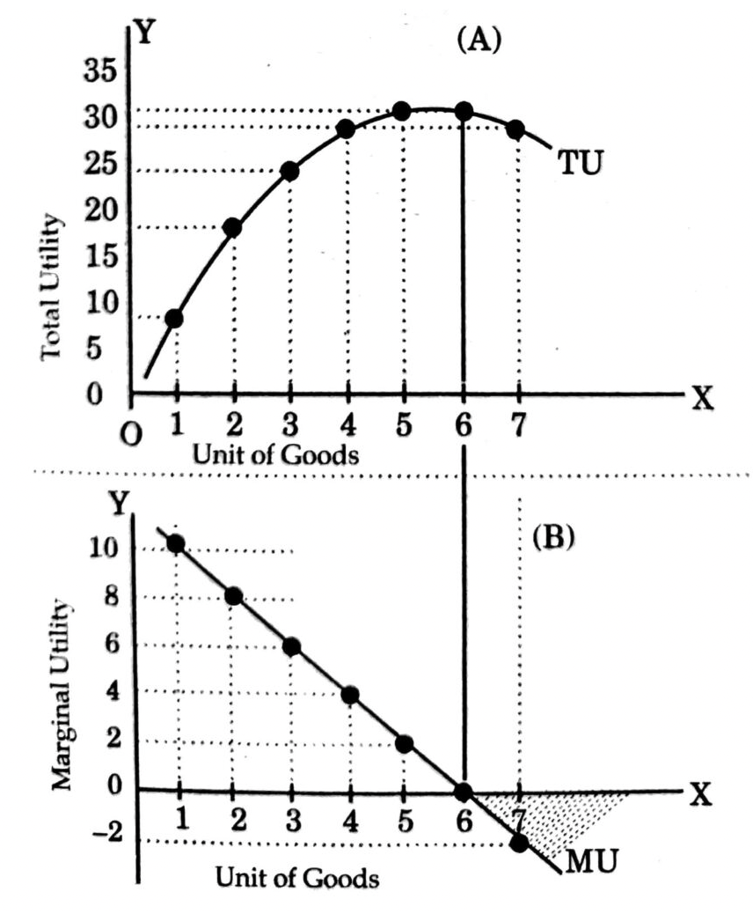
Derivation
How the demand curve is derived
Remember
The purpose of the consumption is to get utility
Every one has budget constraints
People have to make choice about what to consume and its quantity
The consumers’ choice is to maximize utility given the existing budget constraints
Budget constraints and utility maximization
Assuming only two goods with a fixed income (e.g., Chicken and beef): Budget line and isoquant
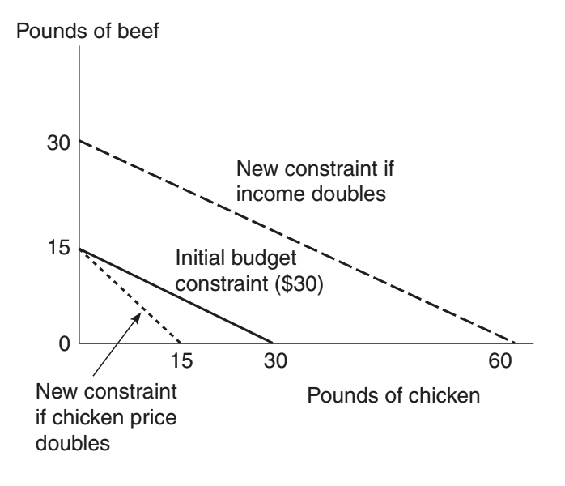
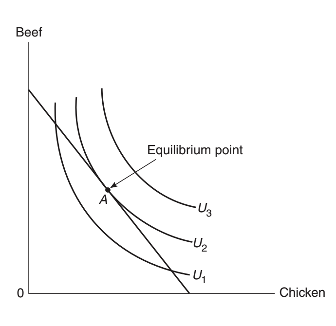
Change of the price of chicken
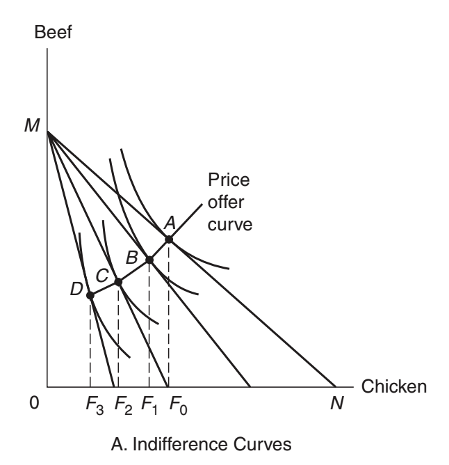
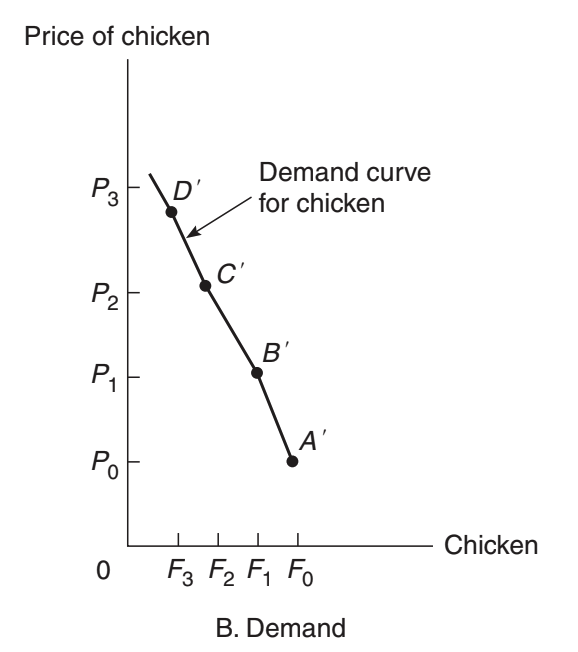
Maximization utility for consumers given budget constraint
Example: A consumer has a budget of $100 to spend on two goods, X and Y. The prices of the goods are $10 for X and $20 for Y. The consumer wants to maximize their utility by choosing the optimal combination of X and Y.
- Maximize utility function: U(X, Y) = f(X,Y) = \(X^{0.5} * Y^{0.5}\)
- Subject to budget constraint: 10X + 20Y = 100
Then, the graph of the maximization utility for consumers given budget constraint is shown below.
Factors influencing the demand for goods or services
Shift in demand curve
- Price of related goods
- The number oand type of people desiring the goods
- Income
- Preference
- Expected future price and product availability
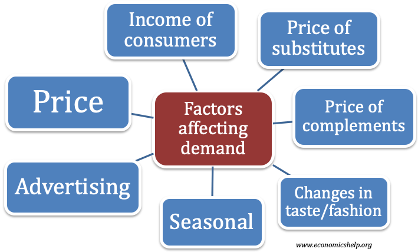
Shift in demand curve
- Related goods
Substitutes: Goods that can be used in replacement of each other (e.g., Coke and Pepsi, butter and margarine, etc.). If the price of one good rises, the demand for its substitute will increase.
Complements: Goods that are used together (e.g., cars and gasoline, printers and ink cartridges, etc.). If the price of one good rises, the demand for its complement will decrease.
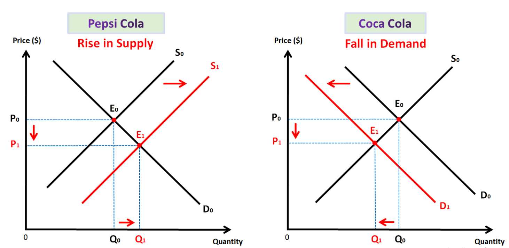

Shift in demand curve
Income
Normal goods: Goods for which demand increases as income increases (e.g., organic food, luxury cars, etc.). If income rises, the demand for normal goods will increase.
Inferior goods: Goods for which demand decreases as income increases (e.g., instant noodles, second-hand clothes, etc.). If income rises, the demand for inferior goods will decrease.
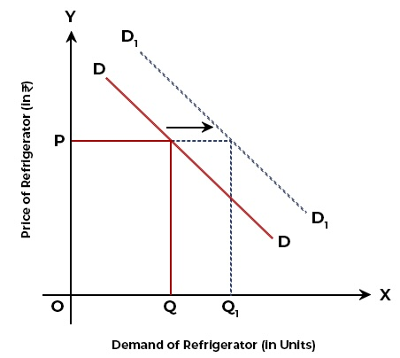
Using the two approaches mentioned above to reduce the demand for smoking
Moving along the demand curve
- Tax the manufacturer: higher price
- 10% \(\uparrow\) in price \(\rightarrow\) 4% \(\downarrow\) in smoking
- Teenagers: 10% \(\uparrow\) in price \(\rightarrow\) 12% \(\downarrow\) in smoking
Shift the demand curve
- Public service announcements
- Mandatory health warnings on cigarette packages
- Prohibition of cigarette advertising on television
- If successful, shift demand curve to the left
Benefit of consumers as a whole will get: Consumer surplus
Consumer surplus: The value placed on goods by consumers minus the cost to the consumers
Measure of demand: Price elasticity of demand
Measure of responsiveness
Slope
\[slope = \frac{\Delta Q}{\Delta P}\]
Elasticity (price elasticity of demand)
\[e = \frac{\Delta \%Q}{\Delta \%P}\]
The main purpose of using percentage change is to remove the impact from unit differences across different goods or service differences
Price elasticity of demand (example)
If the price increase from $10 to $12, the physician visits is reduced from 4 visits per year to 3.5 per year. What is the price elasticity of the demand for physican visits?
First approach:
\[e_D = \frac{\frac{3.5-4}{4}}{\frac{12-10}{10}} = -0.625\]
Some may argue what if the situation is reversed, the price drop from $12 to $10. The visit would increase from 3.5 to 4 visit per year. The elasticity would be:
\[e_D = \frac{\frac{4-3.5}{3.5}}{\frac{10-12}{12}} = -0.857\]
Should not they be the same?
Mid-point approach.
\[ e_D = \frac{\frac{3.5-4}{(4+3.5)/2}}{\frac{12-10}{(10+12)/2}} = -0.733 \]
Formula for price elasticity of demand
Elasticity
\(e_d = \frac{\% \Delta Q_D}{\% \Delta P} = \frac{\frac{\Delta Q}{Q}}{\frac{\Delta P}{P}} = \frac{\Delta Q}{\Delta P} * \frac{P}{Q}\)
If you are given a formula for a demand curve, you can compute the elasticity of demand for any combination of price and quantity along that demand curve
Demand curve \(Q = 8- 2P\)
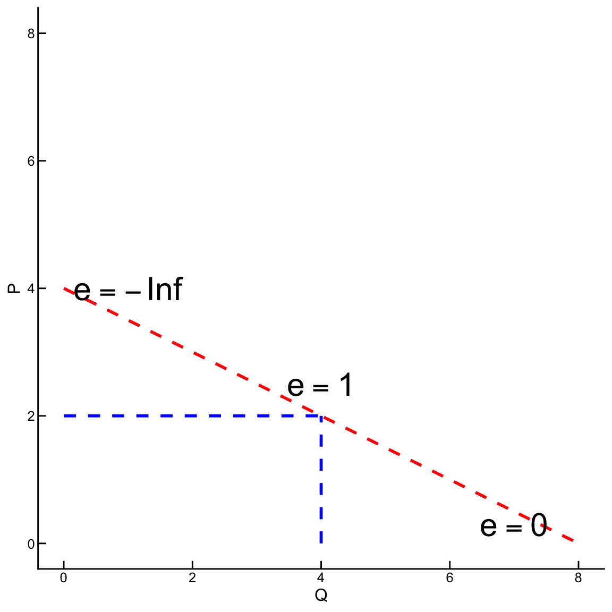
Inelastic and elastic demand
- Elastic demand
- Quantity demanded responds substantially to changes in price
- Inelastic demand
- Quantity demanded responds only slightly to changes in price
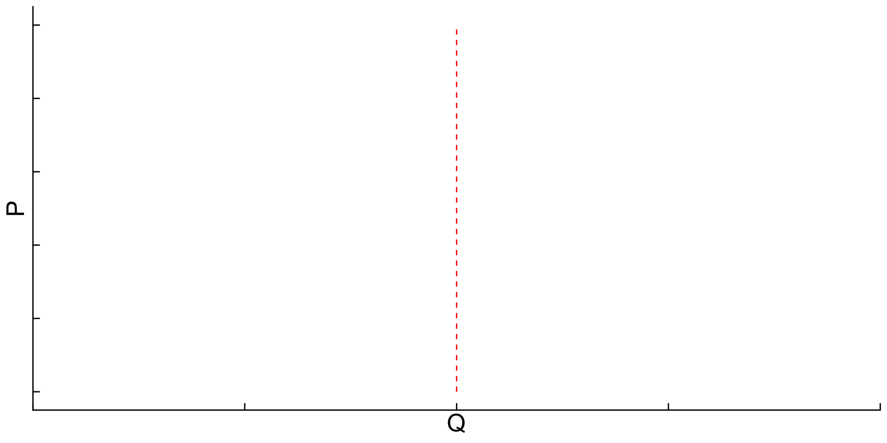
elasticity = 0
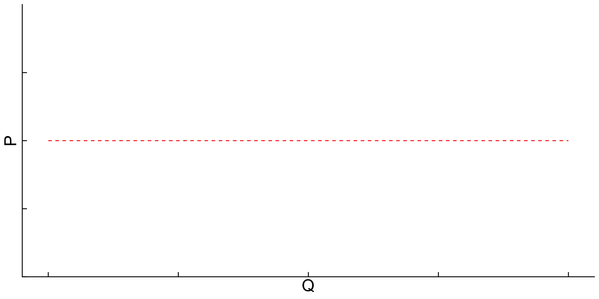
elasticity = \(-\infty\)
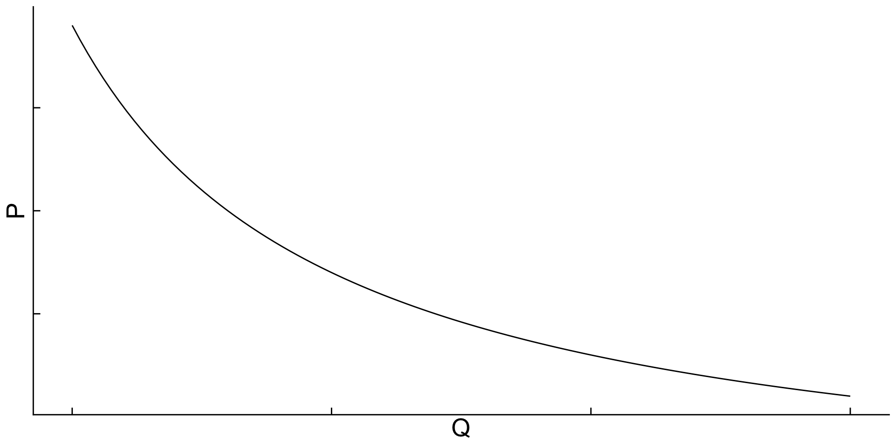
Determinants of elasticity of demand
Availability of close substitutes
- Goods with close substitutes: more elastic demand
Necessities versus luxuries
- Necessities: inelastic demand
- Luxuries: elastic demand
Time horizon
- Demand is more elastic over longer time horizons
Question test
A group of students conducted a survey and found that if the price of banana is incease from $0.5 to $0.6 per pound, the consumption of organge would increase from 2 to 2.5 pounds per month among consumpers.
What is the banana price elasticity of the demand for orange?
\[e_c = \frac{\%\Delta Q_a}{\%\Delta P_b} = \frac{\frac{Q_{After}-Q_{before}}{(Q_{After}+Q_{before})/2}}{\frac{P_{After}-P_{before}}{(P_{After}+P_{before})/2}} = \frac{\frac{2.5-2}{(2.5+2)/2}}{\frac{0.6-0.5}{(0.6+0.5)/2}} = 1.22\]
The same group of students also found that if the income of consumers increase by 10%, the consumption of orange would increase by 15%.
What is the income elasticity of the demand for orange?
\[e_i = \frac{\%\Delta Q_a}{\%\Delta Income} = \frac{15\%}{10\%} = 1.5 \]
Example continue
A study found that if th global oil price increases by 10%, the supply of oil would increase by 5%.
What is the price elasticity for the supply of oil?
\[e_s = \frac{\%\Delta Q_s}{\%\Delta P} = \frac{5\%}{10\%}=0.5\]
Elasticity and health policy
Elasticity and tobacco tax
Tobacco taxation in Afghanistan
Why economists care about tobacco tax
Tobacco is NOT like most other products
Addictive
Very harmful to users and to others in society
Tobacco IS like other products
Its demand responds to
price changes relative to the price of other products
real income changes
changes in tastes and preferences
We can apply the lessons of economics to reduce its use
Questions and comments
Introduction to Health Economics | Fall 2026 | Session 2